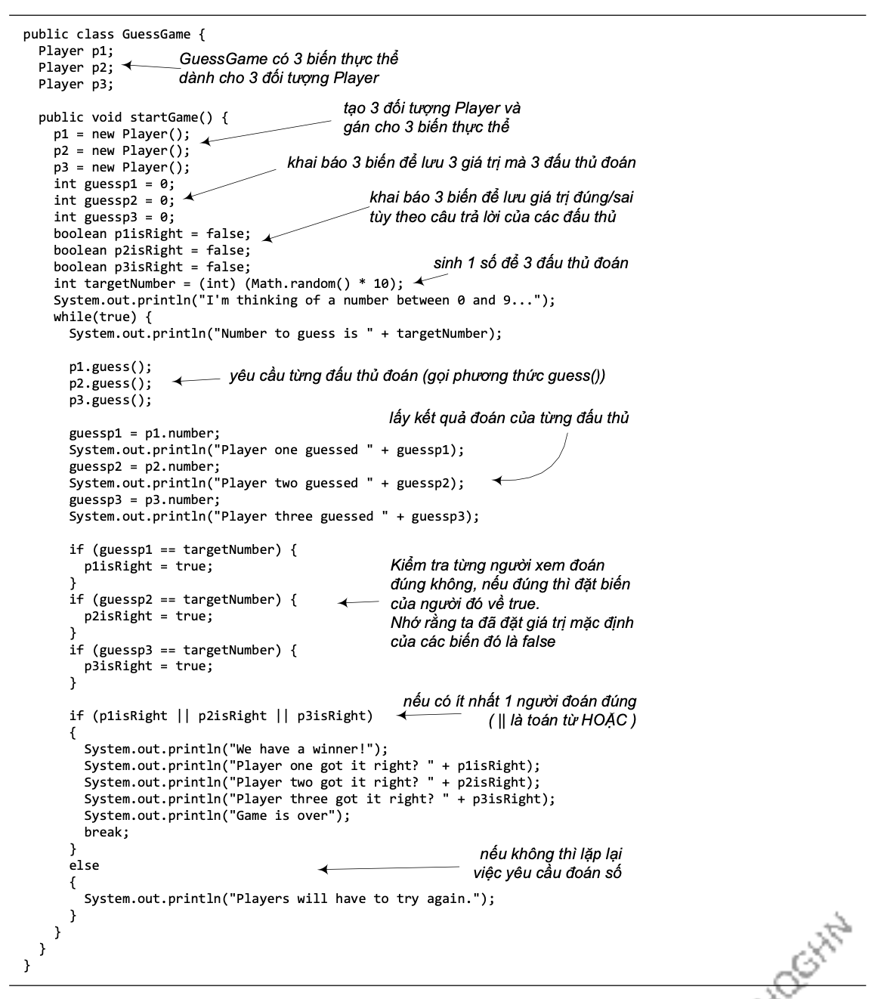
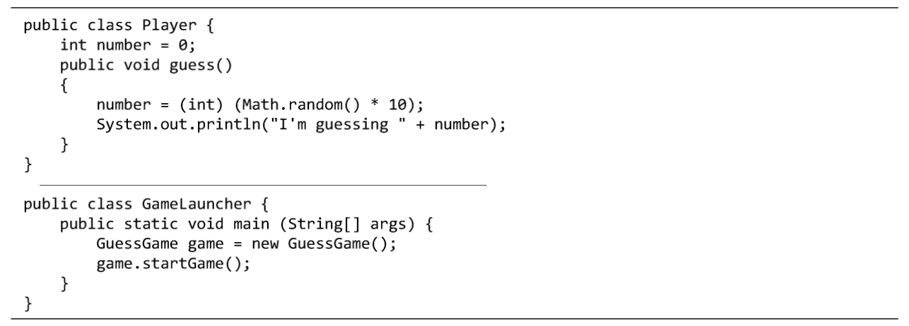

Như đã nói đến trong các phần trước, phương thức main phục vụ hai mục tiêu sử dụng: (1) để thử nghiệm các lớp đã cài; (2) để khởi động ứng dụng Java. Khi ở trong các phương thức main nói trên, ta không thực sự ở môi trường hướng đối tượng, main chỉ tạo và chạy thử các đối tượng. Trong khi đó, ở một ứng dụng hướng đối tượng thực thụ, các đối tượng phải "nói chuyện" với nhau.
Một ứng dụng hướng đối tượng nói chung và ứng dụng Java nói riêng thực chất là các đối tượng nói chuyện với nhau. "Nói chuyện" ở đây có nghĩa rằng các đối tượng gọi các phương thức của nhau. Tại các ví dụ trước, ta có các lớp TestDrive tạo đối tượng các lớp khác và chạy thử các phương thức của chúng. Tại Ch-¬ng 5, ta sẽ có ví dụ mà phương thức main tạo các đối tượng rồi thả cho chúng tương tác với nhau.
Tạm thời, ta dùng một ví dụ nhỏ về trò chơi đoán số để có một chút phác họa về hoạt động của một ứng dụng hướng đối tượng thực thụ. Do ta vẫn đang ở giai đoạn làm quen với Java, chương trình ví dụ này hơi lộn xộn và không hiệu quả, ta sẽ cải tiến nó ở những chương sau. Nếu có những đoạn mã khó hiểu, ta hãy tạm bỏ qua, vì điểm quan trọng của ví dụ này là các đối tượng nói chuyện với nhau.
Trò chơi đoán số bao gồm một đối tượng game và ba đối tượng player. Đối tượng game sinh ngẫu nhiên một số trong đoạn từ 0 đến 9, ba player lần lượt thử đoán số đó. Chương trình bao gồm ba lớp: GameLauncher, GuessGame, và Player
Lô-gic chương trình:
Hình 3.4. Ba lớp của chương trình đoán số.
Nội dung đầy đủ của mã nguồn các lớp GameLauncher, GuessGame và Player được cho trong Hình 3.5 và Hình 3.6.
Hình 3.5: Mã nguồn GuessGame.java.
Hình 3.6: Player.java và GameLauncher.java